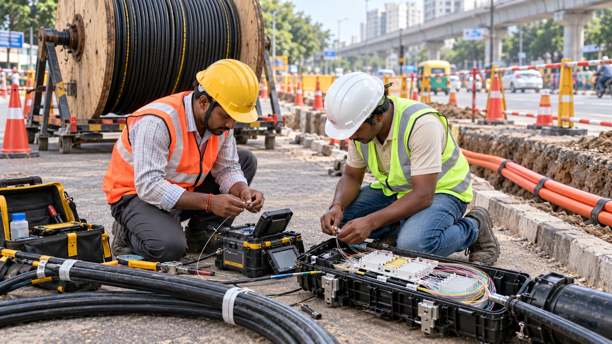

Tata Communications Plans Up to $450 Million for India’s AI Fiber Network
The communications provider plans roughly 10,000 km of new fiber linking data-center hubs, adding connectivity to India’s AI infrastructure buildout.

Tata Communications plans to invest $400 million to $450 million in an Indian fiber network intended to connect the country's growing AI and data-center hubs. The communications provider announced the project Monday, outlining approximately 10,000 kilometers of new long-haul fiber. It is a proposed infrastructure program, not a report that the full network is already built or carrying traffic.
The announcement adds another constraint to the AI investment debate. Computing chips need electricity, but data also needs to move between facilities, customers and international networks. The quality of those connections affects what a collection of data centers can deliver as a coordinated service. More processing capacity does not automatically solve a bottleneck elsewhere in the system.
Our report on NEXTDC's Melbourne power delay shows the financial consequences when one infrastructure input arrives later than expected. Tata's plan addresses a different input: connectivity. Both cases illustrate why AI expansion depends on a sequence of working systems rather than a headline count of buildings or processors.
A phased route through key hubs
Tata says the first phase will focus on the Mumbai-Pune-Hyderabad-Chennai corridor. Later phases would extend to eastern and western hubs including Vizag, Bhubaneswar, Jamnagar and GIFT City. The proposed network will connect with the company's global backbone and international cable landing stations, linking domestic facilities with routes beyond India.
In a management interview reported by Moneycontrol, the company described deploying the capital over three to five years, with priorities shaped by traffic projections, capacity needs and data-center development. That is a planning horizon, not a promise that every route will enter service on the same date. The public announcement does not provide a complete route-by-route commissioning schedule.
The stated customers include large cloud operators, specialist AI cloud providers and enterprises. Those groups can have different requirements for capacity, resilience and cost. A network built to serve them needs more than physical distance on a map: the service must connect the facilities customers actually use and become available when their workloads need it.
Why fiber matters to AI services
Tata describes the project as a high-capacity, low-latency network. Capacity concerns how much information can move; latency concerns how long a communication takes. These characteristics solve different problems. A link can carry large amounts of data while still imposing delays that matter to an application requiring rapid exchanges between separate locations.
Resilience is another consideration. A route may offer attractive performance in normal conditions, but enterprise customers also need to understand what happens when a cable or network component fails. Announcing a fiber footprint does not, by itself, establish the performance of its backup arrangements. Those details belong in service specifications and operating evidence as the network is commissioned.
Our analysis of AI infrastructure delivery and financing explains why a physical asset's value depends on its utilization. Fiber creates capacity to sell. It becomes a commercial return only when customers use and pay for services at prices that cover construction, maintenance and financing costs.
Management's market estimate is a forecast
Chief executive Ganesh Lakshminarayanan said the Indian data-center-to-data-center connectivity opportunity could exceed $1 billion over the medium term. That is the company's assessment of the addressable market, not revenue already contracted to Tata. The distinction is essential when comparing a broad market opportunity with the company's planned investment.
Management says a growing share of its broader expansion is supported by anchor commitments and contracted demand. But Chokshi told Moneycontrol that contracts for the proposed AI network had not yet been announced. The broader expansion and this specific program should therefore not be conflated. It would be premature to describe every kilometer as pre-sold.
For investors, the useful milestones will be routes entering service, disclosed customer commitments and evidence that the assets are generating returns. For AI users, they will be dependable connectivity and the ability to move workloads where needed. Monday's announcement sets out the scale of Tata's ambition; delivery and customer adoption will determine how much of that ambition becomes productive infrastructure.
TATACOMM · View NSE chart on TradingView ↗
Sources and methodology
Sources checked October 26, 2026. Company statements, reported findings and forecasts are attributed in the text. Financial and operational implications are editorial analysis. The generated cover is illustrative.